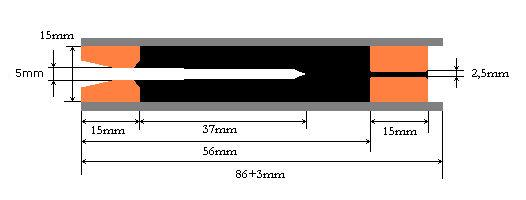

Elkészítése és felhasználása csak saját felelősségre!
Szükséges anyagok:
4db A4-es rajzlap, vízüveg, kisecset, 15mm-es cső (amire föltekered [nekem egy rézcső]), 1db 5mm vastag szög, deszkalap, két 15mm vastag ~15cm hosszú farúd, BP[70/30], 5-öss és egy 2,5-3-as fúróhegy, száraz agyagpor.
1. A jó BP elkészítése a következő: Gyüjtesz fenyőt vagy fűzfát, darabokra hasítod és kiégeted egy a tetején kis lyukkal ellátott, régi festékes dobozban kint a tűzben. (lényege, hogy ne kapjon oxigént de a gázok távozhassanak a fából) Akkor égett ki, ha már nem is füstölög a festékes doboz teteje a nagy tűzben. Ha kiveszed ne nyistd ki míg ki nem hült külömban elparázslik az oxigéntől! Ezt legjobban egy golyósmalomban lehet lisztfinomságú porrá őrölni. Súlyra kimérjük 70/30 arányban a KNO3-at és a faszénport. Egy főzőpohárban/edéynben a KNO3-at magában felfőzzöd nem túl sok vízben, hogy feloldódjon teljesen, és utána hozzáöntöd ezt a vizes oldatot a szénporhoz. Elkevered jó alaposan préselgetheted granulálhatod, ahogy tetszik, majd kiszárítod, lehetőleg napon, radiátoron.
2. Miután megvan a BP[70/30], kezdődhet a motorköpeny készítése: A 4db vastag rajzlapot egyenkét szépen elkezded széltében (nem hosszában) föltekerni a csőre közben ecsetelni bőségesen vízüveggel. Miután mindd a 4 db-ot föltekerted kapunk egy elég masszív vastagfalú papírcsövet. (Száradás közben lesznek rajta rétegek közötti rések, sajnos én sem tudom tökéletesre csinálni.) Miután megszáradt kb.:1 nap, 3db-ra vágjuk nyílván ~100mm hosszú darabok jönnek ki belőle. Ezután jöhet a száraz agyagpor és az egyik farúd ami teljesen tömött nincs közepén furat, ezzel belekalapáljuk nagyon erősen, 15mm hosszan! (Ha ezt nem bírná a papírcső akkor a nyomást se bírta volna szóval próbáljunk erősebbet csinálni legközelebb.)
3. Kifúrod az agyagot középen 4mm-es fúróheggyel, és lehet rátenni a deszkába ütött szögre. A szög deszkából kiálló hossza nyílván legyen az agyagfúvóka és az égéscsatorna hosszának összegével. [52mm] Most pedig jöhet a BP, földszáraz legyen, vagyis nagyon kicsit nedves annyira, hogy ha egy adagot kiveszünk belőle és megszorítjuk látszodjon rajta az újjlenyomatunk, de véletlenül se tocsogjon a víztől! (3 motor adaghoz kb.: 5-6 csepp víz)
4. Kezdődhet a préselés, itt is eledendő egy nagyobb kalapács erős ütésekkel. Persze itt előkerül a másik farúd aminek legalább 40mm hosszan furat van a közepében. Ezzel ütöd le adagolna a BP-t addig amíg el nem lepi a szöget. Utána fojtathatod a tömött farúddal, egészen a kívánt hosszig.
5. Jöhet a záró agyagdugó 15mm vastagon, ezt is erősen beleütöd és kifúrodk 2,5-3mm vastag fúróheggyel addig amit el nem éred az előzőleg belekalapált BP-t (ebbe lehetőleg ne nagyon fúrj bele). Végül ebbe a kis furatba is préselsz (elég kézzel) BP-t valami gyufadarabbal vagy ami beleillk, egészen a tetejéig. Tulajdonképpen ennek a hosszától függ a késleltetés. Esetleg ide lehet egy kicsit más aránnyal lassabban égő anyagot is préselni, mondjuk 50/50 arányban, de ahogy kikisérletezgeted... A maradék papírcsövet mondjuk vasfűrésszel óvatosan levágod vagy eleve olyan hosszúra vágod a papírcsövet, de így is hagyhatod. Ide aztán lehet tenni bármit amit időzíteni akarsz. Rakéta modellhez megfelelő mennyiségű BP- port kell tenni, vékony papírlappal lefedve, amennyi kitudja lökni az ejtőernyőt. Napon, radiátoron kiszárítod 2-3 nap.
Sok sikert!
ICE Irása